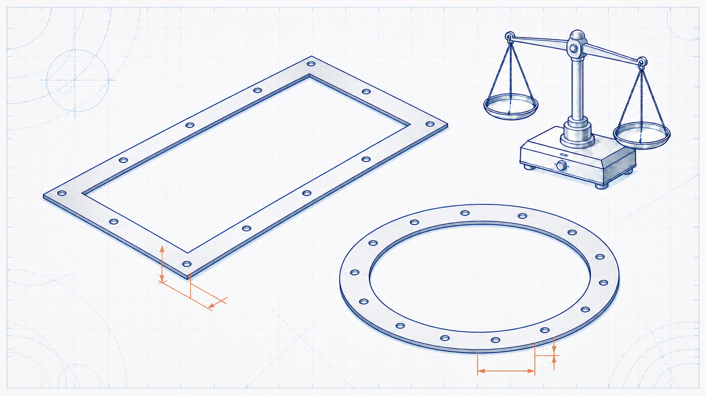

Rectangular flange
Lₒ = 2[(L + Wf) + (W + Wf)]
The existing calculator uses the rectangular centre-line length based on inside dimensions and face width Wf.
 IndustrialCalculation HubSearch topics, tools, articles...⌕
IndustrialCalculation HubSearch topics, tools, articles...⌕Existing engineering calculator
Estimate the weight of a rectangular or circular flange from its internal geometry, face width, thickness, selected material density and quantity.

Select flange geometry, enter the internal dimensions and cross-section, then choose material and quantity. The existing result reports the single and total weight.
For a fabricated plate flange, select the actual plate material. Cast flanges require a separate geometry and material model.
Engineering knowledge
A flange is a rectangular frame or circular ring used to join ductwork, piping or fabricated equipment. Its mass is determined by the material cross-section, centre-line length, density and quantity. The calculation is useful for early material estimates, but final flange assemblies may include bolts, holes, weld metal, gaskets, coatings and other components that must be assessed separately.
Use actual geometry and verified material data for work that affects procurement, lifting, support loads or fabrication release.
Read the Duct Weight Calculator guidance →Lₒ = 2[(L + Wf) + (W + Wf)]
The existing calculator uses the rectangular centre-line length based on inside dimensions and face width Wf.
Lₒ = π(D + Wf)
D is internal diameter and Wf is face width, using the existing centre-line approximation.
m = Lₒ × Wf × t × ρ
All dimensions are converted consistently by the implemented calculator before density is applied.
For a rectangular flange with 1,000 mm inside length, 800 mm inside width, 50 mm face width, 10 mm thickness and mild steel density, the existing relation gives a 3.800 m centre-line length and an approximate single-flange mass of 14.91 kg. Bolts, holes and connection details are not included.
No. The output is for the main flange material only. Add all connection hardware separately for a complete assembly weight.
It provides a simplified ring or frame material estimate. Standard pipe flange dimensions and pressure ratings must be selected from the relevant standard and manufacturer data.
Quantity scales the calculated weight of one flange to an estimated total mass for the stated number of identical parts.
This is an original educational summary. Verify material certification and project requirements for actual work.